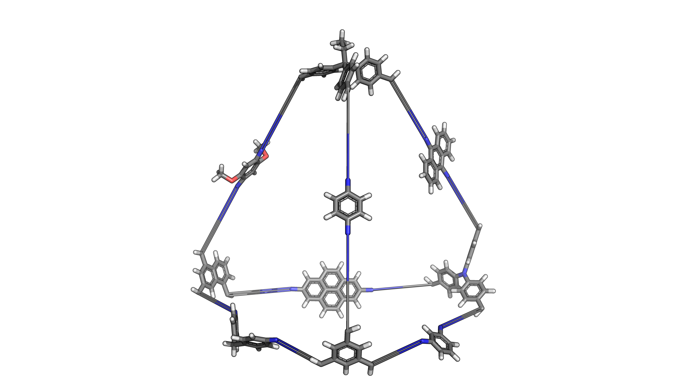
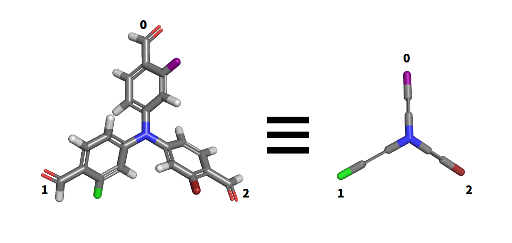
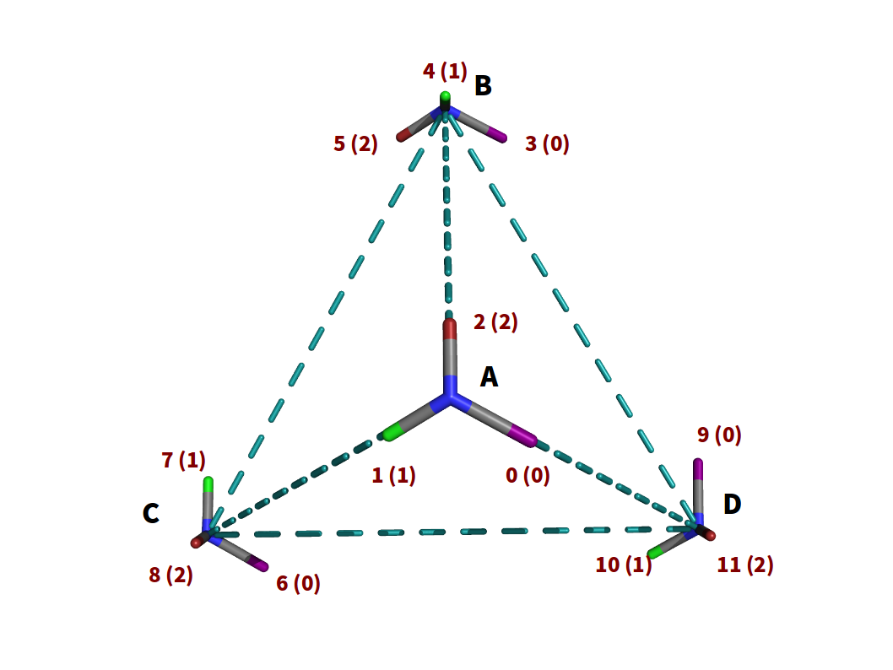
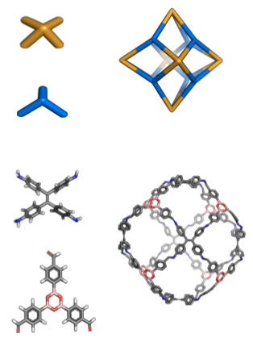

Advanced Cage Building¶
This tutorial describes how more complex cages can be built and how to
directly control which cage structural isomers are built. Everything
covered here is documented in the _CageTopology docstring.
Multi-component cages.¶
Recall that simple cages can be built from two building blocks.
bb1 = StructUnit2('1.mol', 'amine')
bb2 = StructUnit3('2.mol', 'aldehyde')
cage = Cage([bb1, bb2], FourPlusSix())
Also, recall that every assembled macromolecule remembers which building blocks were used to build it.
cage.building_blocks # [<StructUnit2 ...>, <StructUnit3 ...>]
cage.building_blocks[0] is bb1 # True
cage.building_blocks[1] is bb2 # True
The attribute MacroMolecule.building_blocks is a list of
StructUnit instances. The exact ones used to build it in the
first place. Note that this is true for all assembled molecules, not
just cages. This will be important later.

If we want the cage to be assembled from more building blocks, we simply add them to the list of building blocks!
bb1 = StructUnit2('1.mol', 'amine')
bb2 = StructUnit2('2.mol', 'amine')
bb3 = StructUnit2('3.mol', 'amine')
bb4 = StructUnit2('4.mol', 'amine')
bb5 = StructUnit2('5.mol', 'amine')
bb6 = StructUnit2('6.mol', 'amine')
bb7 = StructUnit3('7.mol', 'aldehyde')
bb8 = StructUnit3('8.mol', 'aldehyde')
bb9 = StructUnit3('9.mol', 'aldehyde')
bb10 = StructUnit3('10.mol', 'aldehyde')
cage = Cage([bb1, bb2, bb3, bb4, bb5, bb6, bb7, bb8, bb9, bb10], FourPlusSix())
To build a cage like this.
This works with any cage topology. When building the cage, stk
will go through all the vertices and edges in the topology and randomly pick a
building block from the list provided during initialization to place on it. stk
will only pick from the building blocks with the appropriate number
of functional groups for that particular vertex or edge, of course.
What if we want to place particular building blocks on specific vertices or edges?¶
First, we need to be aware of the fact that every cage topology is defined
by a series of vertices and edges on which we place the building blocks.
The FourPlusSix topology has four vertices and six edges. These
are held in the class attributes FourPlusSix.positions_A and
FourPlusSix.positions_B, respectively. This means that
FourPlusSix.positions_A is a list of length 4 and
FourPlusSix.positions_B is a list of length 6.
With that out of the way, we can build a cage where we place our many building blocks on specific vertices and edges.
cage = Cage([bb1, bb2, bb9, bb10],
FourPlusSix(bb_assignments={0: [0, 1, 3],
1: [2],
2: [0, 4, 5],
3: [1, 2, 3]}))
What this code says, is that the StructUnit with index 0
in MacroMolecule.building_blocks will be placed on vertices
0, 1 and 3. The StructUnit with index 1 in
MacroMolecule.building_blocks will be placed on vertex 2.
Equally, the StructUnit with index 2 will be placed on edges
0, 4 and 5.
So what are vertices 0, 1 and 3? These identify each vertex in
FourPlusSix.positions_A by their index. The same is true for edges,
edges 0, 4 and 5 are simply the eges with those indices in
FourPlusSix.positions_B.
So in summary, the keys of bb_assignments identify the building blocks
by their index in MacroMolecule.building_blocks and the values
identify the vertices or edges on which that building block is
placed.
Building structural isomers.¶
Begin by picking a topology.

This is a
FourPlusSixwith4vertices and6edges. The vertices a labelledA,B,CandD.Pick a three functionalized building block.
For the purposes of drawing, we can simplify the representation of our molecule. Recall, that each building block is represented within
stkas aStructUnit3instance.Place the building block on each vertex of the topology.
Notice that because we duplicate the building block to make the macromolecule, the atom ids changed. The atom id of
bonderatom within the macromolecule is shown next to the atoms while the original atom id in theStructUnitis shown in brackets. Note that the macromolecule is represented instkby aMacroMoleculeinstance, in this case aCage.Rotate each building block while keeping it on the vertex to minimize the distance between the
bonderatoms and the edges of the topology. Let’s take a birds eye view of each vertex.
At each vertex, pick any arbitrary edge and select a
bonderatom. We then rotate the building block until the selected edge andbonderatom are perfectly aligned. The bonder atom is identified by the id inStructUnit3, not by the id inMacroMolecule. Once rotation is done, create the bonds between all the building blocks in the macromolecule and we have one structural isomer. We can define whichbonderatom we picked for alignment at each vertex with the following codeA_alignments = [2, 1, 0, 2]
Don’t worry about why the variable is called
A_alignments. What this means, is that at the first vertex,Awe selected the thirdbonderto align with our arbitrarily chosen edge. For the second vertex,Bwe selected the second bonder. For the third vertex,Cwe selected the first bonder and for the last vertexDwe selected the third bonder again.The other bonder atoms also fell directly on edges because the functional groups were 120 degrees apart. Had they not been, they would have not been well aligned with their respective edges. Only the distance between the selected edge and
bonderatom is minimized.If we had picked a different
bonderatom at any of the vertices, while keeping the selected edge the same, we would have assembled a different structural isomer. This is because a different bonder atom ends up connected at a different edge. For exampleA_alignments = [1, 2, 1, 2]

Because we have 4 vertices and at each vertex we have 3 possible orientations, we can build a total of 3^4 (81) structural isomers. This is of course assuming that our building block does not have rotational symmetry. If it does, then the number of structural isomers will decrease. This is because rotating a symmetric building block will not change the connectivity of the molecule.
The code to control structural isomers by changing the orientation of the building blocks is therefore
isomer1 = Cage([bb1, bb2], FourPlusSix(A_alignments=[2, 1, 0, 2]))
isomer2 = Cage([bb1, bb2], FourPlusSix(A_alignments=[1, 2, 1, 2]))
The length of the list A_alignments is equal to the number
of vertices in a given topology. Therefore for the cube topology with 8
vertices we could do
isomer = Cage([bb1, bb2],
EightPlusTwelve(A_alignments=[1, 2, 2, 0, 0, 1, 1, 2]))
The number must be between 0 and 2 because there are three
bonder atoms. We do not specify the bonder atoms by their actual
atomic id, only by this index.
Let’s look at a different cage topology.
This topology has three and four functionalized building blocks.
To specify which bonder atoms get aligned
isomer = Cage([bb1, bb2],
SixPlusEight(A_alignments=[0, 3, 3, 1, 3, 2],
B_alignments=[2, 1, 2, 0, 2, 1, 1, 2]))
A_alignments always refers to the building blocks with the greater
number of functional groups while B_alignments always to the ones
with fewer. Because in this case there are at most four functional groups
A_alignments can have any value between 0 and 3, inclusive. As the
building blocks with the fewer number of functional groups have three
of them, the number put into B_alignments can be between 0 and
2, inclusive.
Look at _CageTopology.A_alignments and
_CageTopology.B_alignments for more documentation.
Finally, consider the case where we have a two functionalized building block. In these cases the building blocks are placed on the edges, and can be placed either parallel or anti-parallel along it.
In cases like this
isomer = Cage([bb1, bb2], FourPlusSix(A_alignments=[0, 1, 2, 0],
B_alignments=[1, 1, -1, 1, -1, 1]))
The values placed into B_alignments are either
1 or -1 to distinguish between the two possible orientations.
Assuming the there is no symmetry in the building blocks, quite a
few structural isomers are possible!
Putting it all together.¶
By specifying all the optional arguments you can build a specific structural isomer of a multi-component cage!
isomer = Cage([bb1, bb2],
FourPlusSix(A_alignments=[0, 1, 2, 0],
B_alignments=[1, 1, -1, 1, -1, 1],
bb_assignments={0: [0, 1, 3],
1: [2],
2: [0, 4, 5],
3: [1, 2, 3]}))
Next step is to put this in a loop and so some screening.